Where we are heading
Part 1
Why it mattersWatson, Varian, and 8 real problems.
Part 2
Eight problems up closeWhat the data looks like: regression, classification, and clustering.
Part 3
Types of learningSupervised, unsupervised, semi-supervised.
Part 4
Y = f(X) + εNotation, regression function, estimation.
Part 5
Estimating fKNN, curse of dimensionality, parametric models.
Part 6
Model accuracy & bias-varianceTrain/test MSE, bias-variance trade-off, and classification.
Statistical learning is the set of tools for estimating f — the function that maps inputs X to output Y. This course builds the full mental model: from Watson to the bias-variance decomposition.
Statistics in the news — IBM Watson
"It's machine learning allows the computer to become smarter as it tries to answer questions — and to learn as it gets them right or wrong."
— David Ferrucci (PI of IBM Watson DeepQA), on why Watson beat Ken Jennings at Jeopardy! — DailyFinance, February 8, 2011.
Statistics in the news — Hal Varian
"I keep saying that the sexy job in the next 10 years will be statisticians. And I'm not kidding."
— Hal Varian, Chief Economist at Google — New York Times, August 5, 2009.
Carrie Grimes (Harvard anthropology → Google): "People think of field archaeology as Indiana Jones, but much of what you really do is data analysis."
Statistics in the news — FiveThirtyEight
Nate Silver's FiveThirtyEight aggregated polls with a statistical model to predict state-level election results with remarkable accuracy.
90.9%
Chance of winning (+13.5 since Oct. 30)
vs.
9.1%
(−13.5 since Oct. 30)
Silver's book The Signal and the Noise (2012) explains why most predictions fail: mistaking noise for signal.
Key idea: combine many noisy polls via a statistical model to produce a more stable probability estimate.
Eight statistical learning problems
- Identify the risk factors for prostate cancer.
- Classify a recorded phoneme based on a log-periodogram.
- Predict whether someone will have a heart attack from demographic, diet and clinical measurements.
- Customize an email spam detection system.
- Identify the numbers in a handwritten zip code.
- Classify a tissue sample into one of several cancer classes, based on a gene expression profile.
- Establish the relationship between salary and demographic variables in population survey data.
- Classify the pixels in a LANDSAT image, by usage.
Prostate cancer — predict lpsa
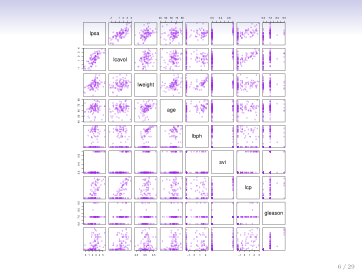
Data: 97 men; 8 clinical predictors; outcome = lpsa (log PSA).
lcavol(log cancer volume) has the strongest relationship withlpsa.lcpandlcavolare correlated — multicollinearity matters.svi(seminal vesicle invasion) is binary — visible as two-column strips.gleasonis an ordered integer — only a few distinct values.
Phoneme classification — aa vs ao
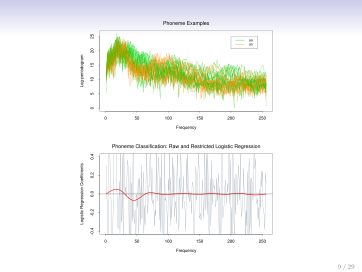
Top: log-periodograms for "aa" (green) and "ao" (orange) overlap at high frequencies. Bottom: raw LR coefficients (grey bars, noisy) vs. smooth restricted fit (red curve) — regularisation is needed.
Heart attack prediction — South African data

Data: 462 males; outcome: chd (coronary heart disease, binary). Predictors: sbp, tobacco, ldl, famhist, obesity, alcohol, age.
■ chd=1 ■ chd=0
- Age and ldl: clearest separation.
- Tobacco: heavily right-skewed.
- famhist: binary — two-column strips.
- No single predictor separates perfectly.
Spam detection — customised filters
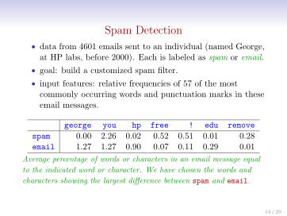
Handwritten zip codes — digit recognition

p = 256 features (16×16 pixels) · K = 10 classes · N ≈ 9000 training images. The same digit looks dramatically different across writers.
Cancer gene expression — breast cancer subtypes

Data: Gene expression from breast tumour biopsies. Thousands of genes; ~200 patient samples.
Hierarchical clustering heatmap (green = below average, red = above average) reveals four subtypes — without any pathologist labels:
- Luminal A — most common, best prognosis.
- Luminal B — more aggressive.
- ERBB2+ — HER2-positive.
- Basal — triple-negative, worst prognosis.
Salary and demographics

Central Atlantic USA males, 2009 CPS. Age: non-linear (peaks ~40). Year: slight upward trend. Education: ordered categorical, clear step-up effect.
LANDSAT image classification

4 spectral bands per pixel → classify into: red soil, cotton crop, vegetation stubble, mixture, grey soil, damp grey soil. Predicted map (right) nearly matches the true map (middle).
The supervised learning problem
The components
- Y — outcome (response, target, dependent variable).
- X = (X₁, …, Xₚ) — p predictors (features, inputs, covariates).
- Training data (x₁,y₁), …, (xN,yN) — N labelled observations.
Two sub-types
- Regression: Y is quantitative (wage, lpsa, sales).
- Classification: Y is categorical (spam/ham, digit 0–9, cancer subtype).
Both regression and classification use the same framework; only the type of Y and the loss function change.
Objectives of supervised learning
- Accurately predict unseen test cases.
- Understand which inputs affect the outcome and how.
- Assess the quality of our predictions and inferences.
Unsupervised learning
No outcome variable
Just predictors X measured on a set of samples. No Y to predict.
Objectives (fuzzier)
- Find groups of similar samples (clustering).
- Find features that vary together.
- Find low-dimensional structure in high-d data (PCA).
The challenge
No ground truth to evaluate against. Hard to know how well you are doing.
Still very useful
Often a pre-processing step for supervised learning — or the only option when labels are unavailable.
Example: the cancer subtypes from Part 2 emerged from unsupervised clustering with no pathologist labels.
Semi-supervised learning
The setting
A small set of labelled examples and a much larger set of unlabelled examples.
Why it arises
- Labels are expensive: pathologist time, human annotation, clinical trials.
- Raw data is cheap: images, text, genomic sequences.
The idea
Use the unlabelled data to learn the structure of X (clusters, manifolds), then use the few labelled examples to attach Y to that structure.
Modern examples
- Foundation models (GPT, BERT): pre-trained on vast unlabelled text, fine-tuned with small labelled sets.
- Medical imaging: one annotated scan per patient, thousands without labels.
The Netflix Prize — supervised or unsupervised?
October 2006: Netflix releases a matrix of ratings: 18,000 movies × 400,000 customers, each rating 1–5 stars. The matrix is 98% missing.
Goal: predict the rating for 1 million missing (customer, movie) pairs. Netflix's own algorithm achieved RMSE = 0.953. The prize: $1,000,000 for the first team achieving 10% improvement.
Looks unsupervised (no explicit Y column), but each known rating is a labelled observation. This is a supervised regression problem with a massive missing-data challenge.
BellKor's Pragmatic Chaos wins
After nearly 3 years, two teams simultaneously achieved the 10% threshold. BellKor's Pragmatic Chaos won by 20 minutes — their submission was received first.
| Rank | Team | RMSE | % Improvement |
|---|---|---|---|
| 1 | BellKor's Pragmatic Chaos | 0.8567 | 10.06 |
| 2 | The Ensemble | 0.8567 | 10.06 |
| 3 | Grand Prize Team | 0.8582 | 9.90 |
| 4 | Opera Solutions and Vandelay United | 0.8588 | 9.84 |
The winning solution blended over 100 different models. The best single method was matrix factorisation.
Statistical Learning vs Machine Learning
Different roots
- Machine learning arose as a subfield of Artificial Intelligence.
- Statistical learning arose as a subfield of Statistics.
- Both focus on supervised and unsupervised problems using the same algorithms.
Different emphases
- ML: large-scale applications, prediction accuracy, computational efficiency.
- SL: models, interpretability, precision and uncertainty of estimates.
- The distinction has blurred enormously — there is massive cross-fertilisation.
"Machine learning has the upper hand in marketing." — Hastie & Tibshirani
Running example: the Advertising data
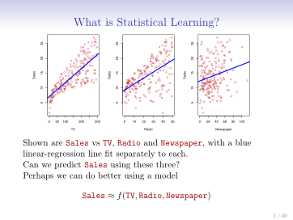
200 markets. TV: strong (but non-linear). Radio: moderate. Newspaper: weak. Goal: Sales ≈ f(TV, Radio, Newspaper).
Notation: Y = f(X) + ε
We observe a response Y and p predictors X = (X₁, X₂, …, Xₚ).
Y = f(X) + ε
- f — the systematic information X contains about Y. Fixed but unknown.
- ε — error term: measurement noise, unmeasured causes, randomness. Independent of X, mean zero.
- Statistical learning is the set of approaches for estimating f.
What is f(X) good for?
Prediction
With a good f̂, predict Y at new X = x. The internal form of f̂ does not matter — a black box is fine if it predicts well.
Example: Credit card default. Predict P(default | X) to decide whether to approve a loan. The model can be complex — we only care about the final probability.
Inference
Understand which Xⱼ matter and how they affect Y.
Example: Income survey. Seniority and years of education have big impacts on Income; marital status typically does not. We need a simple, interpretable model to make such statements.
Is there an ideal f(X)?
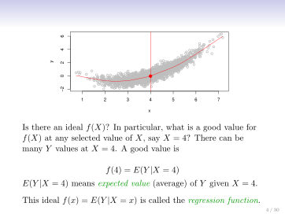
At X = x there are many possible Y values (due to ε). The best single prediction is:
f(x) = E[Y | X = x]
The regression function — the average Y at a given x. The red curve threads through the cloud; each grey point deviates by ε.
Reducible vs irreducible error
For any estimate f̂(x) of f(x):
E[(Y − f̂(X))²|X=x] = [f(x) − f̂(x)]² + Var(ε)
Reducible error
The gap between our f̂ and the true f. Can be closed with more data, better features, or smarter models.
Irreducible error
Var(ε). Even knowing f exactly, we still err on individual Y values because of noise.
The irreducible error sets a hard floor on test error. No model — however complex — can beat Var(ε).
How to estimate f — nearest-neighbor averaging
We want f̂(x) ≈ E[Y | X = x]. Problem: typically no training points have exactly X = x.
Solution — relax to a neighbourhood:
f̂(x) = Ave(Y | X ∈ 𝒩(x))
Average Y over the k nearest neighbours of x in the training data.
- Works well for small p (p ≤ 4) and large N.
- A sliding window on a 1D scatter traces out f(x) by averaging nearby Y values.
Curse of dimensionality
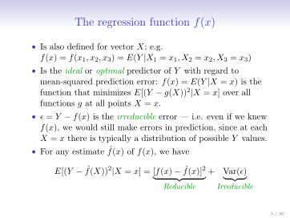
Left: 10% neighbourhood in 2D stays local. Right: radius needed to capture 10% of volume grows rapidly — at p=10 it spans almost the entire space.
Parametric models — the linear model
Instead of estimating f freely at every x, assume f has a specific form with few parameters:
fL(X) = β₀ + β₁X₁ + β₂X₂ + … + βₚXₚ
- A linear model is specified by p + 1 parameters: β₀, β₁, …, βₚ.
- Estimate the parameters by fitting to training data (e.g. least squares).
- Almost never exactly correct, but often a good interpretable approximation to the unknown true f.
Linear vs quadratic fit
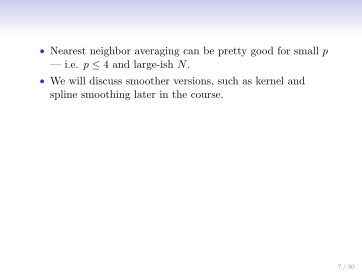
Top: linear f̂L(x) = β̂₀ + β̂₁x — misses the curvature (high bias). Bottom: quadratic f̂Q(x) = β̂₀ + β̂₁x + β̂₂x² — fits much better.
The income surface — three fits
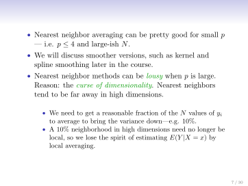
True f — smooth curved surface
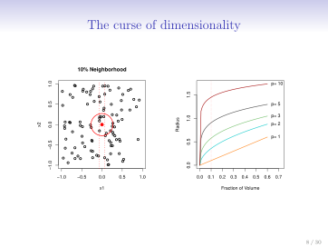
Linear f̂ — flat plane (underfit)
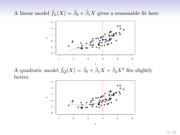
Overfit spline — zero training error, generalises poorly
Overfitting: the model memorised training noise. Training error ≈ 0, test error is large.
Trade-offs in choosing a model
- Prediction accuracy vs interpretability — linear models are easy to explain; splines and neural nets are not.
- Good fit vs over-fit vs under-fit — how do we know when the fit is just right?
- Parsimony vs black-box — we often prefer fewer variables and a simpler story, even at a small cost in accuracy.
| ← More interpretable | More flexible → |
|---|---|
| Subset selection, Lasso | Bagging, Boosting |
| Least squares linear regression | Support Vector Machines |
| Generalised Additive Models, Trees | Deep neural networks |
Assessing model accuracy — train vs test MSE
Given training data Tr = {xᵢ, yᵢ}₁ᴺ and a fitted model f̂:
Training MSE:
MSETr = Avei∈Tr[yᵢ − f̂(xᵢ)]²
Always decreases as complexity increases. Biased toward overfit models. Not a reliable guide.
Test MSE (what actually matters):
MSETe = Avei∈Te[yᵢ − f̂(xᵢ)]²
Evaluated on fresh data not seen during fitting. The true measure of how well the model generalises.
Training MSE is not a reliable guide to test MSE. Always evaluate on held-out data.
The U-shaped test MSE curve — three scenarios
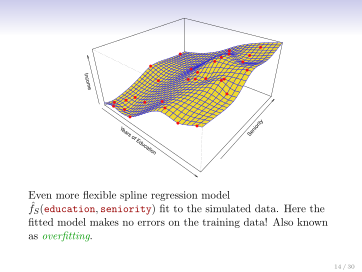
Curved truth: moderate flexibility optimal
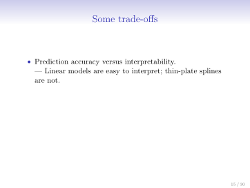
Linear truth: linear model wins
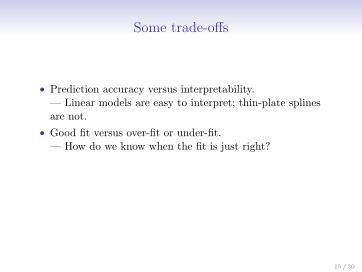
Wiggly truth: high flexibility needed
Each panel: grey = train MSE (decreases monotonically), red = test MSE (U-shape), dashed = irreducible Var(ε).
Bias-Variance Trade-off
E[(y₀ − f̂(x₀))²] = Var(f̂(x₀)) + [Bias(f̂(x₀))]² + Var(ε)
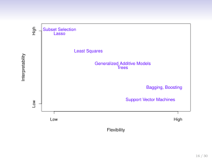
Three scenarios: MSE (dark red), Bias² (cyan), Variance (orange), Var(ε) (dashed). As flexibility ↑: Bias² ↓, Variance ↑. The U-shape is their sum.
Complexity drives the trade-off
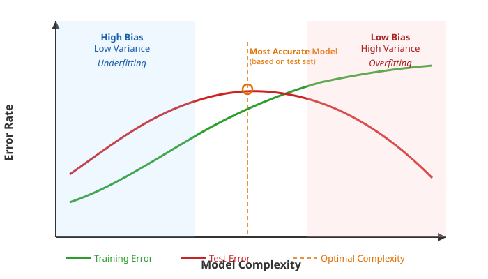
Training error always decreases as complexity grows. Test error forms a U-shape: the left arm is underfitting (high bias, low variance); the right arm is overfitting (low bias, high variance). The sweet spot is the minimum of the U.
Bias-variance as a target diagram
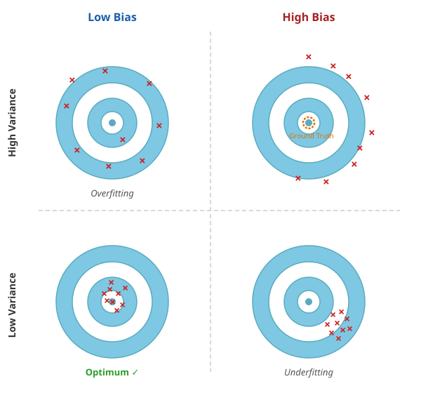
Each bullseye = repeated experiments. × marks show predictions. Low Bias + Low Variance (bottom-left) = consistently on target. High Variance = scattered. High Bias = systematically off-center. Overfitting lives top-left; underfitting bottom-right.
Classification problems
When the response Y is qualitative (categorical), the problem is called classification.
- Email is spam or ham — binary classification (K = 2).
- Digit is one of 0, 1, …, 9 — 10-class classification.
- Breast tumour subtype — 4-class classification.
Goals: (1) build a classifier C(X) that assigns a class label to new X; (2) assess the uncertainty in each classification; (3) understand which predictors drive the classification.
The Bayes optimal classifier
Define the conditional class probabilities:
pₖ(x) = Pr(Y = k | X = x), k = 1, 2, …, K
The Bayes classifier assigns x to the class with the highest conditional probability:
C(x) = j if pj(x) = max{p₁(x), p₂(x), …, pK(x)}
In a 1D binary example: the black curve shows p₁(x) = Pr(Y=1|X=x). The Bayes boundary is where p₁(x) = 0.5.
The Bayes classifier has the smallest possible error rate of any classifier in the population. It is the gold standard — but it requires knowing the true pₖ(x), which we never do in practice.
Nearest-neighbor for classification
Estimate pₖ(x) by local averaging — just as in regression:
p̂ₖ(x) = fraction of the k nearest neighbors with class k
Assign x to the most common class among its k nearest neighbours.
- The 1D classifier plot shows the estimated p̂₁(x) curve (green) tracking the true p₁(x) (black) reasonably well.
- Still breaks down as p grows — same curse of dimensionality.
- But the impact on the classifier Ĉ(x) is less severe than on the probabilities p̂ₖ(x) themselves.
KNN in two dimensions — the decision boundary
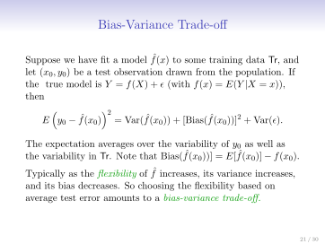
Raw data + Bayes boundary (dashed purple)
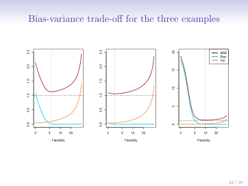
KNN K=10 boundary (black) vs Bayes (dashed)
KNN K=10 closely tracks the Bayes boundary without any parametric assumptions.
K controls the bias-variance dial
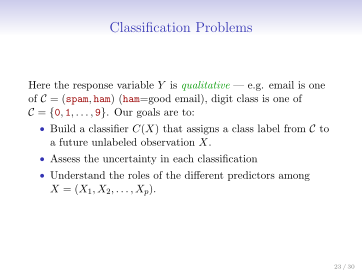
K = 1: zero training error, extremely wiggly boundary — overfit.
K = 100: too smooth, misses non-linearities — underfit.
K = 1 → max flexibility. K = N → predict majority class. Pick K by cross-validation.
Classification error rate and the KNN U-shape
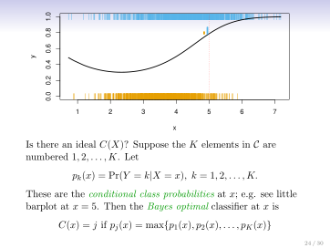
Blue (training): 0 at K=1, rises as K grows. Orange (test): U-shape, minimum at K≈10. Dashed: Bayes error — irreducible floor.
Same story as regression: training error decreases with flexibility, test error has a U-shape.